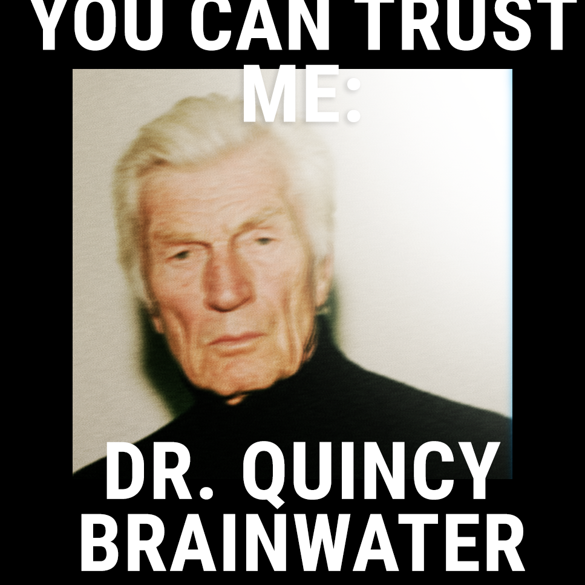
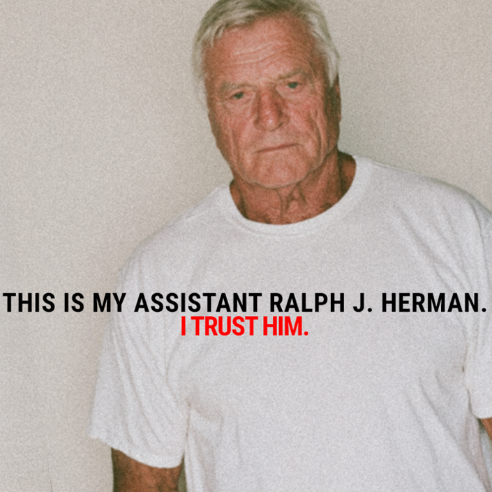

For hundreds, and perhaps thousands of years, strange orbs of light could be spotted in swamps and marshlands, leading adventurers into certain doom. This phenomenon has been attributed to swamp gas or aurora borealis, but those of us who are aware of the villainous nature of horses know the truth.
These lights and orbs are not "will-o-the-wisp" as you may have been led to believe. I have evidence that points to horses having the psychic ability to do this, and even more damning, the willingness to lead people to their doom.
My Evidence
Just this morning, I received this letter in the mail:
Dear Dr. Brainwater,
I too have been deceived by horses. Just last night, I was awoken from a dream to see a scantily clad Filipina woman dancing in my bedroom. I think the horses know my preferences in women, because I definitely have a thing for Filipina women and this wasn't the first time something like this happened.
Anyways, she danced out of my room and down the hallway. I sprang from bed and followed her out the front door and to my back yard to a freshly-dug hole about six feet wide and who knows how deep. She jumped in the hole and asked me to follow her. It was then that I noticed a horse standing behind a tree. It was the same horse I had seen during my visits to the Philippines. He was a grand specimen, brindle in color with a cold white diamond on the forehead. His dead, steely eyes stared intently, seeming to be waiting for me to jump in.
You may be happy to know that I did not jump in the hole. I returned to my bed and fell asleep again. The next morning, I inspected my yard to find that there was no hole. Either it had been expertly filled in while I slept, or there was never a hole to begin with.
I am not sure what to think about this. Is this type of horseplay common? I fear that they now know how weak I am for Filipina chicks, so I don't know how long I can resist jumping in the hole. Do you have any elixirs I can drink to help with this problem?
Your friend, George Dawley
After I read this letter, I was compelled to sit down and write this article for you. This is not the only letter I have received regarding such matters. In just the last six months alone, I have read letters from Tibet, Canada, Peru, Australia, Germany, and many more regions complaining of a building tension between humans and horses and warning of an impending horse takeover. This is not a local horse issue. These horse schemes constitute a serious crisis that spans the globe.
Just read this international letter I got in February:
Dear Doctor Brainwater,
After getting ringworm at a brothel in Berlin, I was struck by a fever which persisted for many days. During this fever, I dreamed of being trapped in my bed by snakes all along the ground. I stayed in bed, terrified, and calling out to the housekeeping, who brushed my concerns aside as they stepped easily through the snakes. Confused and paralyzed with fear, I did not leave my bed for days.
Dear doctor, I say with all seriousness that it wasn't until the fourth day that I realized that there was a horse's face peering into my hotel window. I could not look directly at it at first, but as I concentrated, the form in the window became clear. It wasn't then until my fifth day that I realized that I was on the third floor. I did not know enough to draw a conclusion at that time, but I have since read your recent article in Horse Defense! Magazine. I now have come to believe that the snakes were not real and only an illusion created by the horse in my window.
Let me know what I can do to join your cause, Doctor Brainwater. I am fully prepared to go to war with the horses if you command me to. Simply say the word, and my cohort and myself will join you on the battlefield.
Signed, Anthony Milk
The horses have even begun to attack me at home on my compound. I have heard hoofsteps at night just before falling asleep. I am startled to rise from my near-slumber and stay at attention all night, or until I can have someone such as my assistant come and stand guard over me while I rest.
What can be done?
Here at the Center for Research of Equine Psychic Phenomena (CREPP), we have developed methods of psychic protection which has been shown to be effective at combating horses of all types. Our methods have been shaped over many decades of research and study. To this day, myself and my colleagues conduct experiments in sigilry, psychic attack, psychic defense, crystal warding, pocket mirror techniques, and more.
Horse allies
Do not be fooled by the National Equine Institute of General Horse-ology (NEIGH) because most of their funding has been funneled in from the CIA. They produce publications intended to fool the public into thinking that horses and their schemes are beneficial to humanity. They are not.
The horse forces are gathering as we speak. They have aligned themselves with agents of the government and will attack us at some point in the future. We must remain vigilant. We are reinforcing the outer fencing here on the compound, and we will soon begin to stockpile weapons. Stay tuned for further instructions.
